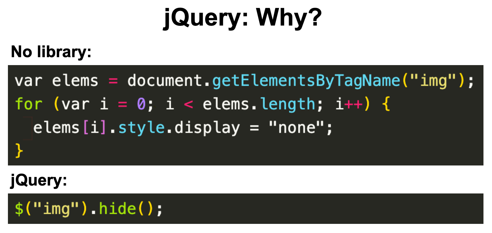

jQuery
jQuery Review Study Guide
Click here to view and make a copy for reference.
JavaScript's Two Main Roles
- DATA: Retrieve, Change, and Store Data
- UI: Change how the UI looks based on the data or based on what the user is doing.
jQuery is a library that helps us do #2, change the UI and respond to user-driven events.

What is a user-driven event?
Anytime a user scrolls, clicks or hovers, we want something to change on the screen.
Sometimes, we only want to change one thing on the screen. We don't want the browser to take the time to reload the entire site, just to change one thing in the UI.
Before we start!
We need to talk about how the browser actually reads your code....
HTML and JavaScript were not written to be able to interact with each other.
Solving the problem
- Browsers contain an API (Application Programming Interface) that allows your JS and HTML to interact.
- There are a lot of APIs that permit different kinds of interactions.
- The programming API for documents (aka web pages) is called the Document Object Model (DOM) - more on this later.
- Browsers like Chrome have this API, the DOM, built in.
- In summary, the DOM allows our JS and HTML to interact in the browser.
What is an API?
Watch here!
The DOM
- The Document Object Model is the bridge between your JS and your HTML.
- Think back to how data talk to each other over the internet. What data type would we need for interactions? Objects! Document Object Model!!!
- The browser's API (the DOM) turns each HTML tag into a JS object, and each of those objects is stored inside the DOM.
- Let's see this in action in our Dev Tools console by looking at MDN documentation on the DOM! Activity on next slide. 😊
DOM Activity on the Document
- Press command-option-J to open JavaScript console in Dev Tools.
- In the console, type:
document; - Press return.
- Then click the dropdown arrow in the result that shows. What do you see?
- Try clicking on nested dropdown arrows. What do you see?
- Does the code look familiar? Yes, what you see is what we often see in the Elements tab when we open Dev Tools Inspector!
What is the DOM?
We have explored the D for Document.
We have explored the O for Object.
What about the M for Model?

Terminology
- The DOM, just like JavaScript objects, is a data structure called a "tree."
- Each point of data is called a "node."
- Each "node" can have a "parent", "child", and/or "sibling" nodes.
- The DOM is accessed by a global variable called
document. - Because the DOM stores information as JS objects, we can use "dot notation" to access methods and properties.
DOM Activity with Dot Notation
In a new tab, open your Chrome Developer Tools console (command-option-J).
Then input the following JS statements, one at a time. Explore the dropdown arrows. What do you see?
document.body;
document.body.children;
document.querySelectorAll('section');
Notice that we can use dot notation to find the body.
Notice that .children selects a parent node's children.
Notice the query selector method to select all html section tags.
DOM query selectors
Instead of having the whole document load every time a user clicks on only one HTML element on the page, how can we only select that element or that kind of element without using lengthy code such as this every time:
document.querySelector('div.gb-Dc');
document.querySelectorAll('section');
Enter jQuery, a JavaScript library that makes the query selection easier.
What is jQuery?
jQuery is a collection of JavaScript code. This is called a library. A library is a collection of reusable methods for a particular purpose. (Like Bootstrap for CSS)
JQuery is JavaScript.
Traversing the DOM with jQuery
Watch here!
How to write jQuery
jQuery does have its own syntax as well. But it is similar to the other libraries we have talked about!
To use jQuery (just like Bootstrap in CSS), you have to add the jQuery library (or CDN) script tag with the jQuery information into your HTML file.
Best practice: Put right before the closing body tag
How to write jquery
Hosted Libraries
Google has a website for all of the links you need for JavaScript Libraries.
Go to Hosted Libraries.
- Once there, in the contents sidebar on the right click on "jQuery" to get to that section of the library.
- Then copy the most recent snippet by triple clicking on that line of code to paste into your project. (next slide)
- Before you leave, you can add this hosted libraries link to your Bookmarks Bar.
Root Folder Activity
Let's create a project that employs our jQuery CDN.
- Create a project titled "jQuery Intro" in Visual Studio Code that has HTML, CSS, JS files and/or folders.
- In your HTML file, paste the jQuery CDN.
- Then create at least 3 elements in the body tag (e.g., breakfast options, grocery list, greeting).
- Congratulations! You've just created a project with elements that can be selected using jQuery! Save this project. We will add more to it later.
How to write jQuery
- Step 1: Let the JavaScript engine know that you are using the jQuery library by writing the $ sign.
- Step 2: Identify which HTML element you want to modify or attach an event to.
- Step 3: Select that element using the selector method from CSS.
- Step 4: Apply a jQuery method.
$("HTML-element-selector").method();
Notice the parentheses that accept a string as a parameter.
Notice the dot notation for methods to call.
Notice that parentheses are used to call the method. Some methods (not shown above) accept parameters.
HTML & jQuery
Here is an HTML element:
<div id="greeting">Hello!</div>
jQuery selecting that HTML element:
$("#greeting")
You can use a selector just like the id selector in CSS.
HTML & jQuery
Here is an HTML element:
<div class="greeting">Hello!</div>
jQuery selecting that HTML element:
$(".greeting")
You can use a selector just like the class selector in CSS.
How do we find DOM elements with $
$("p") //how to select the elements in the DOM
$(".class") //how to select the elements with a certain class
$("#id") //how to select an element with a certain id
jQuery: selecting elements
Write out the jQuery selector for each of the following HTML elements. Click forward to see the answer!
Welcome!
Welcome!
Welcome!
Welcome!
Starting your jquery
$(document).ready(function() {
//jQuery code
});
This makes the JavaScript ready to run on the page. You will add it to the beginning of your JS file.
Let's take a moment to add this code to the jQuery Intro project we started.
jQuery Methods Activity
Check this out!
Then do this mix and match!

Manipulating the UI
Once an HTML element is selected as a jQuery selector, we can then use jQuery methods to change it.
For example, when you click on a button, you want the button to do something (e.g., hide/show, alert, tooltip).
Another example: when you submit a form, you want the form to clear its contents.
jQuery in JS Bin
When using jQuery in JS Bin, click the dropdown arrow next to "Add Library" to add the jQuery CDN. Let's do this, then:
- Create at least 3 elements in the body tag (e.g., color list, dialogue, weather forecast).
- Give at least 1 element CSS styling.
- In the JS panel, remember to select the document and apply the .ready() method to prepare to insert jQuery selectors and methods.
- Finally, in the JS panel, use jQuery to select an element and then apply this method: .hide(). What do you notice?
For extra practice after lecture, feel free to explore:
.text(), .css(), and .empty().
jQuery Practice
Let's select elements to change their color!
- In HTML file, create three paragraphs with no classes.
- In CSS file, create a class of "special" to give its color property a value.
- In JS file, use jQuery to select the paragraphs and then use the proper method to add a class of
specialto the tags.
Hint: use jQuery documentation to help you find the method.
Let's try it in JS Bin!
jQuery Documentation
This website will give you a complete list of jQuery methods. You can use the search function to find methods! Reference this documentation to learn more about what jQuery can do.
*Pro tip: Each page on a jQuery method has code examples near the bottom of the page. Check it out!
Let's talk about some methods
Making things appear or hide
.hide() and .show()
$("#navbar").hide();
$(".maintext").show();
$("img").hide();
.fadeIn() and .fadeOut()
$("#navbar").fadeIn();
$("img").fadeIn(3000);
$(".mainImg").fadeOut(6000);
The number 3000 means, take 3000 milliseconds (aka 3 seconds) to fade this element out. If you make the number larger, it will fade out more slowly.
Try yourself in JS Bin!
Adding things to the DOM
.append() adds to the end
$(".formdiv").append("Thank you for submitting your form!")
.prepend() adds to the beginning
var name = "Doctor Who"
$(".welcome").append("Hello " + name + "")
Try yourself in JS Bin!
Adding things to the DOM
Remember! When you add something in the parentheses of .append() or .prepend(), you have to put the HTML elements in quotation marks.
Try it again! In the same JS Bin used on the previous slide, use jQuery to add another label and input for password.
Changing what is in the DOM
These methods overwrite existing content on the page.
.text() replaces the text in an element with something else
$("#error").text("You can't use that password.")
.html() replaces the html inside an element with something else.
$("div").html("Party time!
")
Practice here!
Changing what elements look like
.css() changes the CSS of an element you have selected.
$("#navbar").css("background-color", "red");
Notice that updating the property-value pair of the element's CSS is in JS syntax, not CSS syntax:
- the dot notation for the method's name:
.css - followed by parentheses that accepts parameters:
() - within the parentheses the two strings that are accepted as parameters:
"background-color"and"red"
JS Bin Exercise
Go to JS Bin to create a paragraph in the html panel. Then run the following in JS Bin:
$("p").text("Hello World!");
$("p").css("color", "red");
$("p").fadeOut(3000);
jquery events
In addition to changing elements when the document loads or depending on certain media queries, we also need to change the UI based on events.
Events are when the user takes an action on your site. Examples: clicks a button, types in a form, hovers over a link, scrolls down the page, etc.
jquery Events
You can use the .on() method to create certain events!
$("img").on("click", function() {
//let's do something!
});
Are there different events that you can use instead of just "click"?
Check this out!
In this Codepen, use the .show() and the .hide() methods to change the paragraphs!
jquery events
$("button").on("click", function(){
$("button").css("background-color", "blue")
});
Explain this code!
Remember...
These two things are the same!
Explain the following two code blocks
$("#theme").on("click", function(){
$("p").toggleClass("theme2");
});
document.getElementById("theme").addEventListener("click", function() {
document.body.classList.toggle("theme2");
})
The top is jQuery and the bottom is plain JS. jQuery is so helpful!
jQuery Events Documentation
Explore more of what jQuery events have to offer.
Then click here to fill out the blanks.
Exercise
Change my Color -- use this jsfiddle link.
When the user clicks the "Red" Button, the text "Change My Color" should be changed to red. When the user clicks the "Blue" Button, the text "Change My Color" should be changed to blue.
Looking at code
Go line by line, and take turns explaing what this code is doing.
Fadein Exercise
Start a root folder. Add your libraries and links. Here is the HTML you can add to your HTML file:
<button id="clicker">Click me to show a hidden secret!</button>
<div id="secret" style="display: none">I am a hidden secret.</div>
See next slide for details.
Fadein Exercise
- Challenge 1: Add jQuery code that fades in the text "I am a hidden secret" whenever the button is clicked.
- Challenge 2: Change your jQuery code so it slides down the text instead of fading it in.
- Challenge 3: Change the button text to say "Click me to toggle a hidden secret!" and make the text toggle between fading in and out each time it is clicked.
Method Chaining
Instead of writing :
$(".warning").hide();
$(".warning").fadeIn(3000);
You can write:
$(".warning").hide().fadeIn(3000);
As long as you are using the same selector, you can chain multiple methods.
Notice the semi-colon is after the last method in the chain.
Explain this code.
Method Chaining Practice
- In JS Bin, select an element.
- Attach an event listener.
- Inside the function's code block, chain at least 3 methods to your selector.
- Show your group your work!
May the force be with you! Exercise
Study the code first! The CSS has been written for you.
Code Pen Challenge here.
Working with forms
When you create a form in HTML, you need a way to store the value that the user types in.
You can do this by selecting your HTML input tag with jQuery and using the .val() method.
$("input").val(); //gives you the value
$("#username").val();
In-class practice
- Create a button in HTML that says “Click me!” and has an ID of “movie”
- When the button is clicked, you want to ask the user what their favorite movie is.
- Store the user’s answer in a variable called favFilm.
- Log the variable favFilm to the console.
Working with forms
.on() with the argument "change" tells the browser to gather every letter that user enters into an input field. For every "change" the value is updated.
Submitting a Form
Explain the following code, line by line.
//Version 1
$("#user-form").on("submit", function(e){
e.preventDefault()//This prevents the form from refreshing the page and wiping all of the user's inputs.
var userEmail = $("#user-email").val();
$("div.welcomeBox").append("Welcome "+ username + "
")
});
//Version 2
$("#submit-button").on("click", function(e){
e.preventDefault()//This prevents the form from refreshing the page and wiping all of the user's inputs.
var userEmail = $("#user-email").val();
$("div.welcomeBox").append("Welcome "+ username + "
")
});
Form Exercise
Create a form in HTML that gets the user's name, email, and phone number.
Display these values to the user in a paragraph in the UI.
Freecodecamp
Complete the first 5 jQuery Exercises
Click here
Watch this Video
Frontend MastersIn-class practice
- Put an image of a panda in your html, with a class of "panda".
- Make the image a button.
- When the picture is clicked, you want the user to be asked if they like pandas.
- If the user says yes, the user should get an alert that says “Me too!”, AND logs a smiley face in the console.
- If the user says no, the image of the panda should be hidden, AND a sad face should be logged in the console.
Review Video
Watch here
Budget Assignment
Click here for budget/function exercise
More jQuery
jQuery Roundup
Click here to review.
THE END
Thank you for your attention!